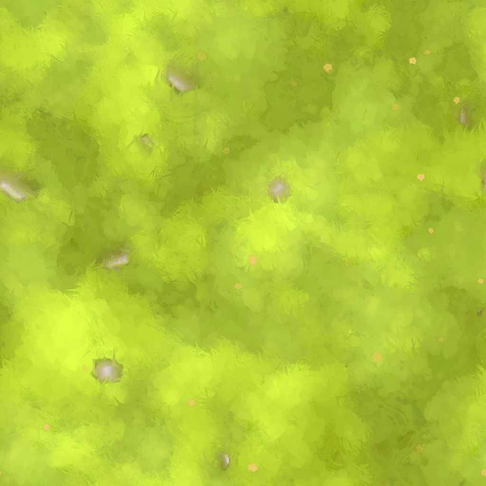
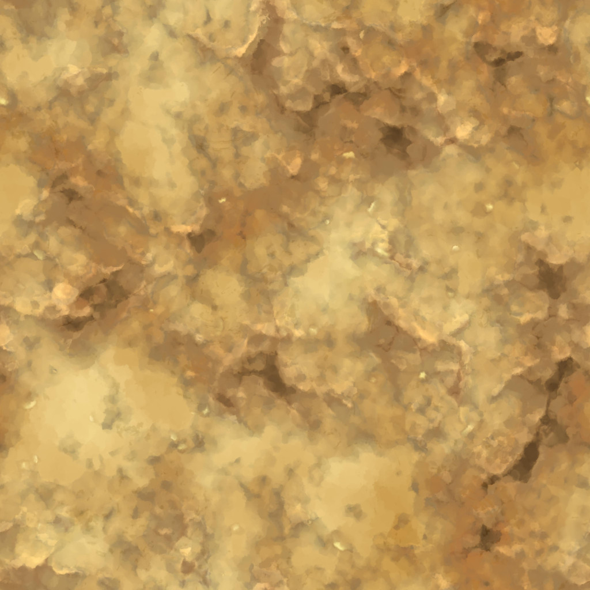
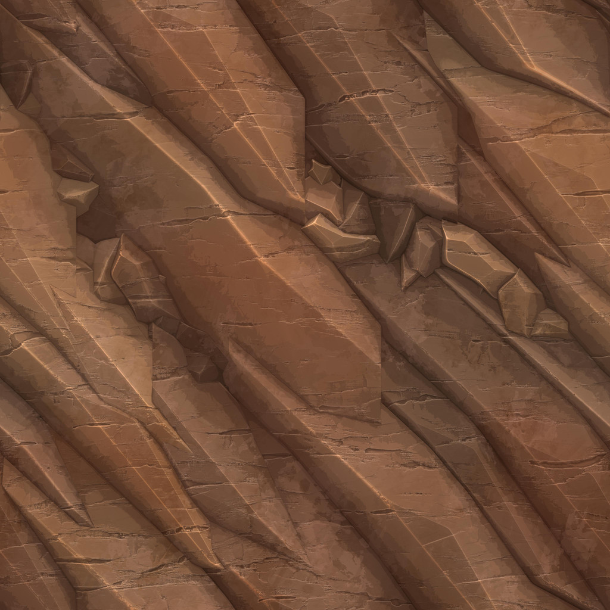
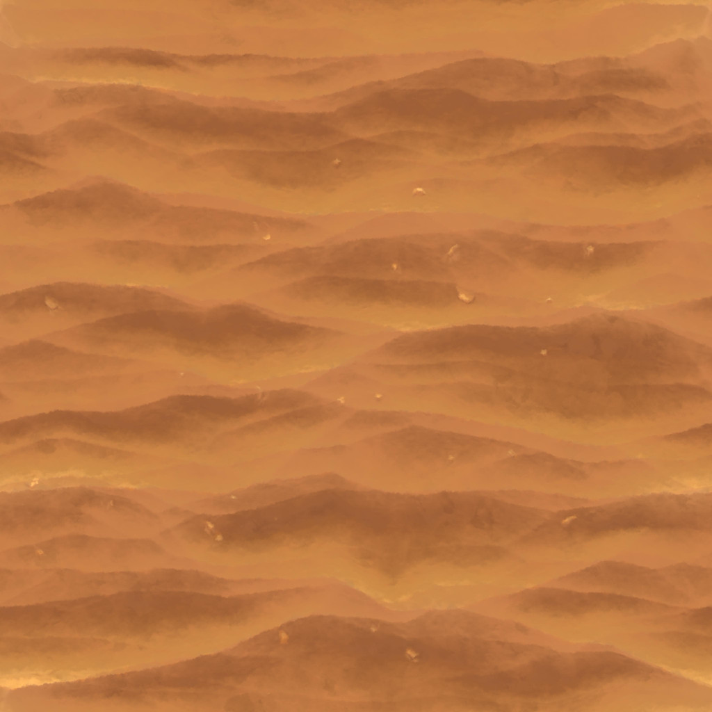

GEAR UP / ESTUDIO DE TERRENO 01
JulioVII × Quaternius
Preparando el valle…
ESTUDIO VISUAL / 01
Una prueba de terreno continuo, cuatro superficies mezcladas, agua sencilla y vegetación agrupada. Los recursos se sirven desde este proyecto.




Stylized Grass & Dirt y Stylized Stone & Wood — Julio Sillet (JulioVII). CC-BY, con atribución. Texturas reducidas de 4096 a 1024 px, recomprimidas y normales renormalizadas. Hierba y roca matizadas en el material.
Stylized Nature MegaKit — Standard. CC0 1.0. Tres árboles, dos rocas, un arbusto y una mata de hierba.
El río y la orilla son propios. Sol, lluvia, nieve y verdor son controles de composición visual. Esta escena es una prueba; el agua, las estaciones y el rendimiento en un móvil físico no están validados como funciones del juego.